Desenvolvido pela Maurinsoft, o TCHATGPT é um ecossistema modular com 28 pacotes (.lpk) e mais de 95 exemplos prontos. Permite integrar modelos LLM em nuvem (OpenAI, Claude, Gemini, Ollama) ou inferência 100% offline via Llama.cpp, agentes autônomos com Tool Calling e protocolo MCP, visão computacional, síntese de voz, telemetria de hardware e automação industrial Modbus/MQTT diretamente em código Pascal nativo.
O TCHATGPT foi concebido para que aplicações nativas em Free Pascal e Lazarus não fiquem restritas a simples chatbots web. Ele transforma seus sistemas em verdadeiras centrais inteligentes capazes de interagir com o mundo digital e físico.
Acesse provedores em nuvem como OpenAI (GPT-4o, o1, mini), Anthropic Claude, Google Gemini e Ollama via REST e streaming, ou execute inferência 100% local e offline com Llama.cpp em formato GGUF, garantindo total privacidade e funcionamento sem internet.
Crie agentes autônomos que raciocinam em etapas (ReAct), consultam bases de dados, executam código Pascal, chamam APIs externas e trocam mensagens estruturadas via protocolos Agent-to-Agent (A2A) e o padrão Model Context Protocol (MCP).
Integração nativa com OpenCV e modelos Python (YOLOv8, CNNs): captura de webcams e arquivos de vídeo, detecção e reconhecimento de faces, estimativa de pose humana em tempo real e rastreamento de movimento de alta precisão.
Dote seus softwares de fala e audição: conversão de texto em voz (TTS), reconhecimento de comandos falados (STT), clonagem vocal, filtros acústicos de áudio e canais de streaming de baixíssima latência via WebRTC.
Conecte a IA ao chão de fábrica: protocolo Modbus TCP/RTU para CLPs industriais, mensageria MQTT, controle de braços robóticos, sensores Kinect, joysticks e emulador de firmware Marlin CNC / Impressora 3D com parsing G-Code.
Motor matemático em Pascal puro: cálculo de caminho crítico (CPM/PERT), componentes visuais de Diagrama de Gantt, Kanban, redes neurais perceptron, mapas auto-organizáveis de Kohonen (SOM) e álgebra matricial (NUMPS).
O repositório do TCHATGPT conta com mais de 95 aplicações completas no diretório pacote/samples/. Clique em qualquer imagem para ampliar e ver detalhes técnicos da implementação:
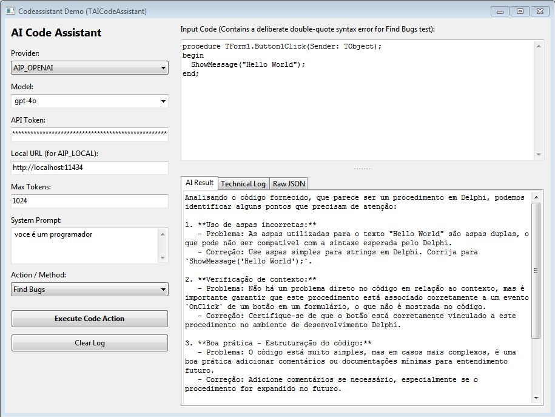
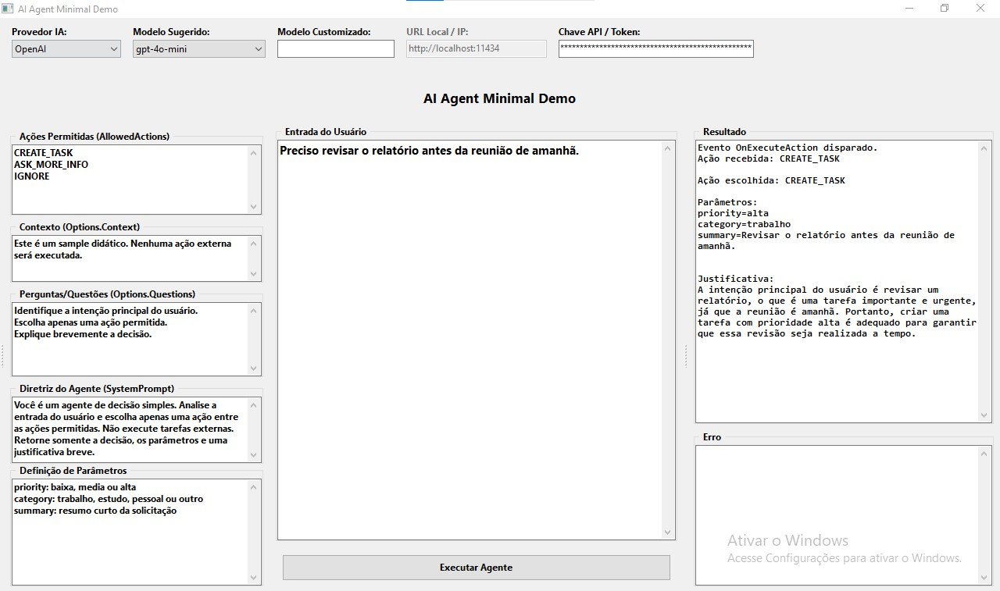
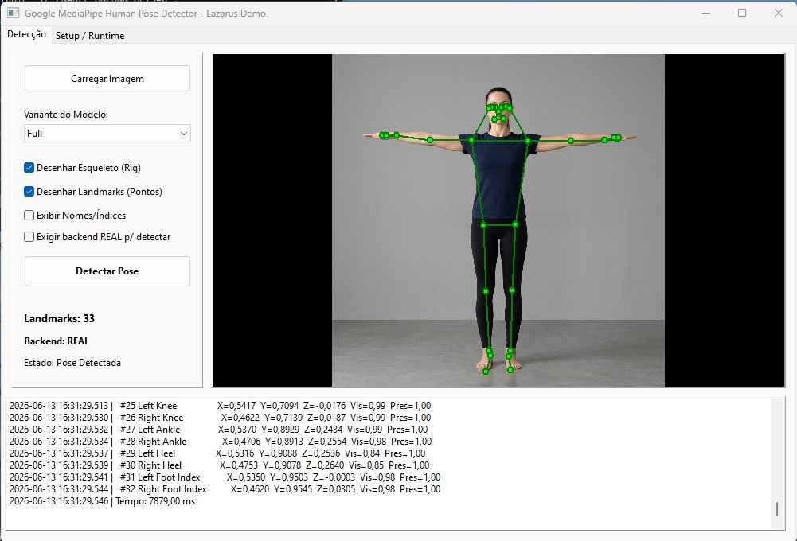
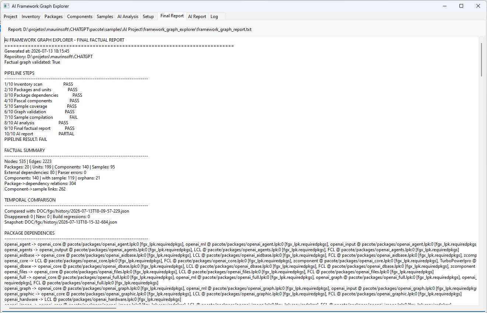
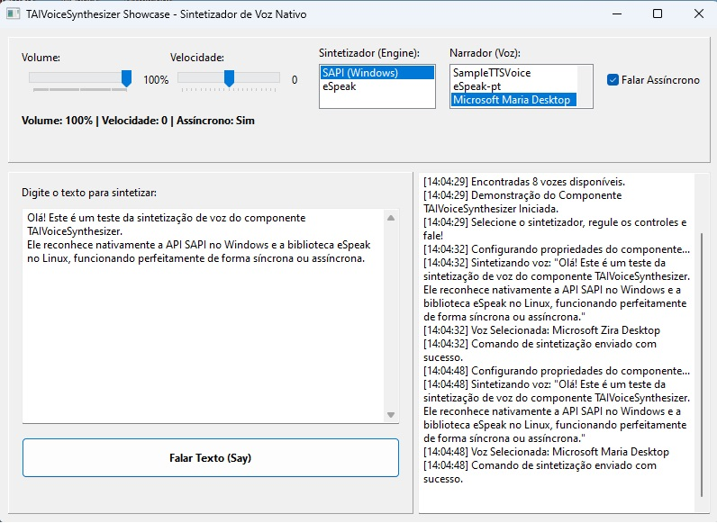
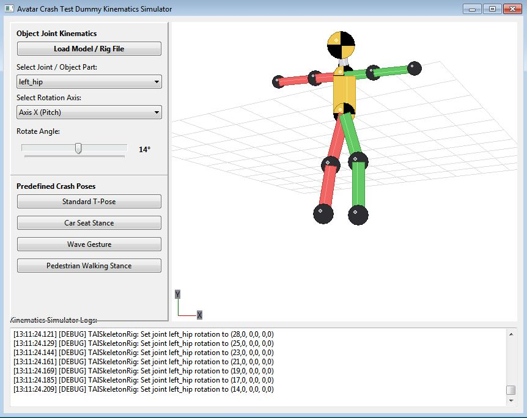
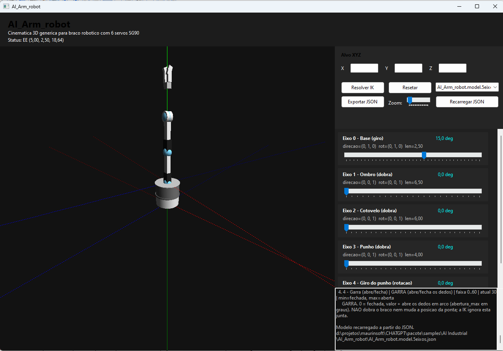
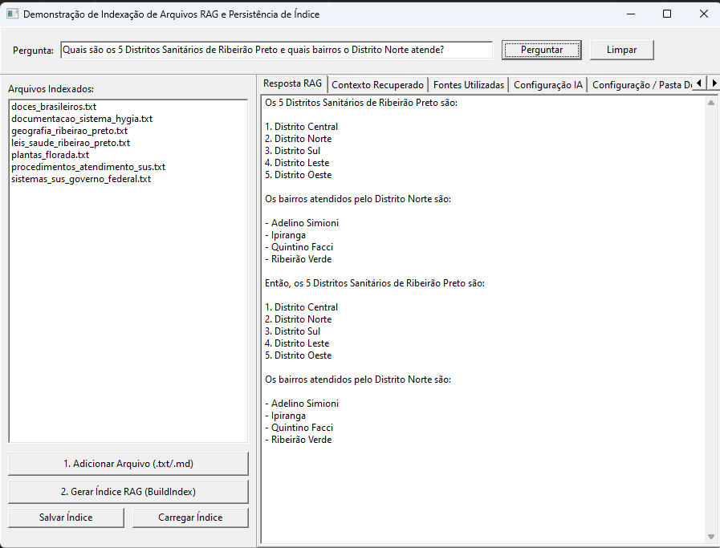
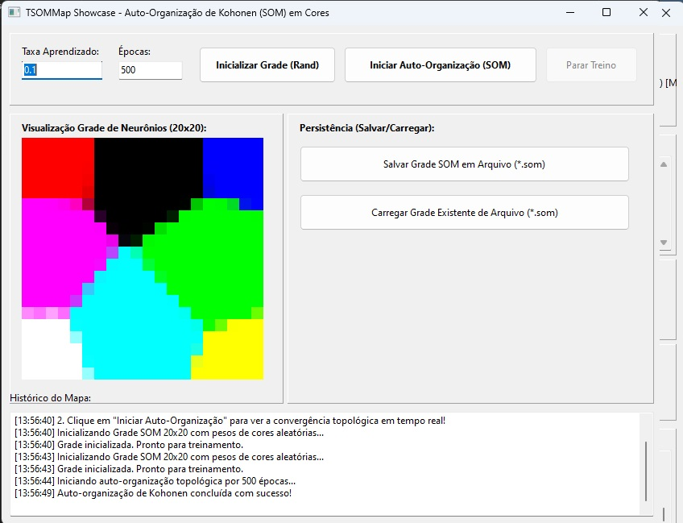
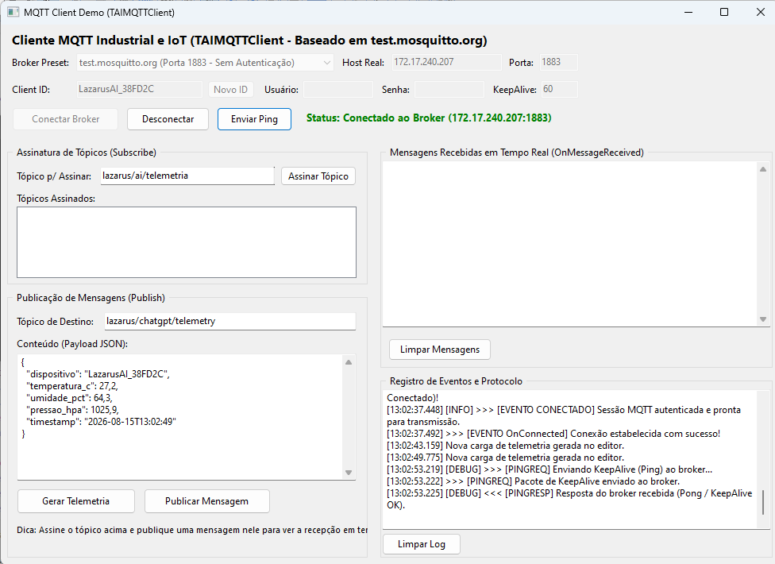
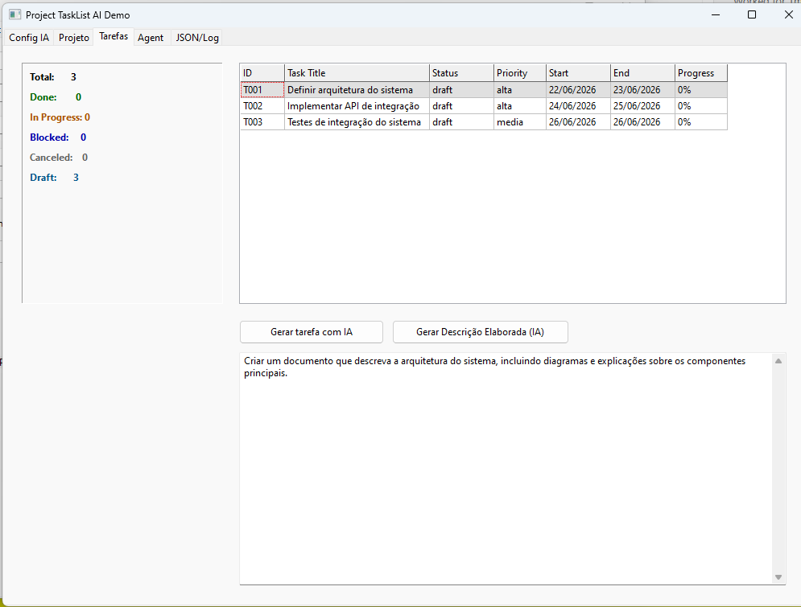
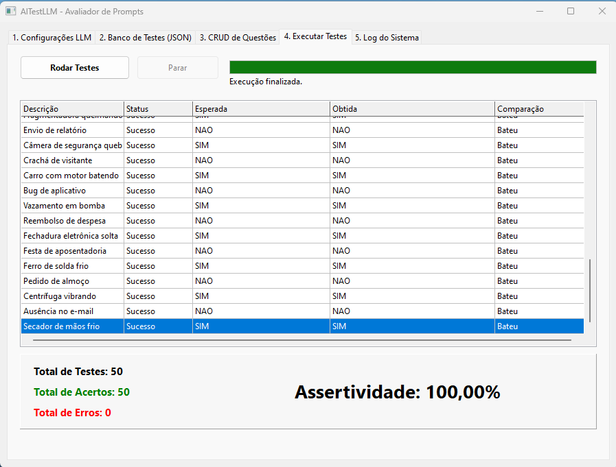
O TCHATGPT adota uma arquitetura estritamente desacoplada. Você pode instalar somente o pacote que seu projeto necessita, mantendo seu executável leve e livre de dependências desnecessárias:
| Pacote (.lpk) | Módulo Fonte | Finalidade Técnica (O que faz) | Principais Componentes | Status |
|---|---|---|---|---|
| openai_core.lpk | pacote/AI/ |
Núcleo de comunicação com provedores LLM (OpenAI, Claude, Gemini, Ollama), contagem de tokens e roteamento de modelos. | TAIBaseComponent, TCHATGPT, TAICodeAssistant, TAIPromptBuilder, TTokenList |
Estável |
| openai_llamacpp.lpk | pacote/AI LlamaCpp/ |
Execução local de modelos de linguagem (LLMs) em formato GGUF via runtime nativo 64-bit sem internet. | TAILlamaCppRuntime, TAILlamaCppModel |
Estável |
| openai_agent.lpk | pacote/AI Agent/ |
Orquestração de agentes autônomos com raciocínio ReAct, tool calling, memória determinística e guardrails de segurança. | TAIAgent, TAIAgentSafety, TAIAgentExecutor, TAIMultiAgentMemory, TAIPipeline |
Estável |
| openai_mcp.lpk | pacote/AI MCP/ |
Implementação cliente e servidor do padrão aberto Model Context Protocol (Anthropic/OpenAI) sobre JSON-RPC. | TAIMCPClient, TAIMCPServer |
Estável |
| openai_a2a.lpk | pacote/AI A2A/ |
Protocolo Agent-to-Agent para comunicação distribuída e delegação de tarefas entre múltiplos agentes de IA na rede. | TAIA2AClient, TAIA2AServer |
Estável |
| openai_vision.lpk | pacote/AI Vision/ |
Processamento de vídeo e imagens com OpenCV: rastreamento facial, detector de movimento e estimativa de pose humana. | TAIOpenCV, TAIFaceTracker, TAIMotionTracker, TAIHumanPoseDetector, TAIFrameBuffer |
Estável |
| openai_voice.lpk | pacote/AI Voice/ |
Processamento de áudio falado: síntese de texto em fala (TTS), reconhecimento de voz (STT) e clonagem vocal. | TAIVoiceSynthesizer, TAISpeechRecognizer, TAIVoiceClone |
Estável |
| openai_industrial.lpk | pacote/AI Industrial/ |
Conectividade industrial: comunicação Modbus TCP/RTU com CLPs, mensageria MQTT, pinos Arduino e braços robóticos. | TAIModbus, TAIMQTT, TAIArmRobot |
Estável |
| openai_project.lpk | pacote/AI Project/ |
Componentes visuais de gestão de projetos: Diagrama de Gantt interativo, redes PERT, quadros Kanban e histogramas. | TAIProject, TAIGanttView, TAINetworkView, TAIBoardView, TAIResourceView |
Estável |
| openai_project_core.lpk | pacote/AI Project Core/ |
Motor matemático de cronogramas: algoritmo de caminho crítico (CPM), grafos acíclicos de tarefas e calendários úteis. | TAICPMScheduler, TAITaskGraph, TAIWorkCalendar |
Estável |
| openai_graphic.lpk | pacote/AI Graphic/ |
Gráficos 3D em OpenGL: visualização de modelos 3D, avatares com sincronização labial e cliente da API Tripo3D. | TAI3DModelViewer, TAIAvatar3D, TAIAvatarController, TAISkeletonRig |
Estável |
| openai_hardware.lpk | pacote/AI Hardware/ |
Telemetria e diagnóstico do sistema operacional: monitoramento de CPU, memória RAM, discos, GPUs e processos. | TAICPU, TAIMemory, TAIDisk, TAIGPU, TAISO |
Estável |
| openai_marlin.lpk | pacote/AI Simulation/AIMarlin/ |
Emulador de firmware Marlin para impressoras 3D e máquinas CNC: parsing de comandos G-Code e portas virtuais. | TAIMarlinSimulator, TAIGCodeParser |
Estável |
| openai_ml.lpk | pacote/AI Math/ |
Algoritmos de machine learning e álgebra linear em Pascal puro: redes neurais perceptron, mapas SOM de Kohonen e NUMPS. | TNeuralNetwork, TPerceptron, TSOMMap, TAIDatasetGenerator, numps |
Estável |
| openai_rag.lpk | pacote/AI RAG/ |
Busca semântica e recuperação aumentada por geração (RAG), indexação de bases de conhecimento e extração de contexto. | TAIRAG, TAIRetrieval |
Estável |
| openai_python.lpk | pacote/python/ |
Ponte com runtimes Python externos para execução de modelos avançados de deep learning (YOLOv8, CNNs e LSTMs). | TPythonConnector, TYoloDetect, TFaceDetection, TCNNClassifier |
Estável |
| openai_output.lpk | pacote/AI Output/ |
Geração de relatórios formatados em Word (DOCX/OpenXML), planilhas Excel (XLSX), PDFs e impressoras térmicas ESC/POS. | TAIWordDocument, TAIXlsxWriter, TAIPDFOutput, TAIPosPrinter |
Estável |
| openai_input.lpk | pacote/AI Input/ |
Captura de entradas do mundo real: joysticks XInput/WinMM, assinaturas acústicas, sensores Kinect, portas seriais e sockets. | TAIJoystick, TAISpeakerSession, TAIKinectSensor, TAISerial, TAISocketTCP |
Estável |
| openai_graph.lpk | pacote/AI Graph/ |
Construção e visualização de grafos de dependência, árvores lógicas e cálculo de rotas viárias em malhas GeoJSON. | TAIGraphVisualizer, TAIDependencyGraph, TAIGraphMap, TAITrainingReport |
Estável |
| openai_dbase.lpk | pacote/AI DBase/ |
Persistência de histórico de conversas, logs de auditoria e memória de longo prazo com suporte ZeosLib. | TAIDBase |
Estável |
| openai_aidbase.lpk | pacote/AI DBase/ |
Extração automática de metadados e dicionários de tabelas relacionais SQL para agentes gerarem queries perfeitas. | TAIDBDictionary |
Estável |
| openai_observability.lpk | pacote/AI Observability/ |
Monitoramento de desempenho: contagem de tokens consumidos, rastreamento de chamadas (spans/traces) e cálculo de custos. | TAITrace |
Estável |
| openai_evaluation.lpk | pacote/AI Evaluation/ |
Avaliação automatizada de qualidade de prompts e modelos com juízes artificiais (LLM-as-a-judge) e relatórios de regressão. | TAIEvalJudge |
Estável |
| openai_webrtc.lpk | pacote/AI Communication/ |
Comunicação ponto-a-ponto (P2P) ultraveloz via WebRTC DataChannel utilizando libdatachannel. | TAIWebRTCClient |
Estável |
| openai_simulation.lpk | pacote/AI Simulation/ |
Simulação em grade bidimensional baseada em autômatos celulares, fluxos de pessoas e navegação de robôs. | TAISimulationEngine, TAIGridWorld |
Estável |
| openai_files.lpk | pacote/AI Files/ |
Varredura profunda e indexação em árvore de arquivos em disco para geração de conjuntos de dados para treinamento de IA. | TAIDiskTreeScanner |
Estável |
| openai_image.lpk | pacote/AI Image/ |
Filtros gráficos e manipulação matricial de imagens diretamente em Pascal nativo sem requerer DLLs pesadas. | imagefilters |
Estável |
| openai_integration.lpk | pacote/AI/ |
Conexão e pipeline unificado para orquestrar múltiplos componentes em sequência de processamento. | TAIIntegration |
Estável |
Compare a arquitetura nativa com os modelos convencionais baseados em navegadores embutidos e frameworks pesados:
Aplicações compiladas com Free Pascal consomem poucos megabytes de memória RAM, inicializam instantaneamente e não dependem de engines pesadas como Chromium, Node.js ou Electron.
Com o pacote openai_llamacpp.lpk, você executa modelos GGUF direto na CPU ou GPU da máquina do cliente, garantindo sigilo absoluto de dados sensíveis e conformidade total com a LGPD.
Precisa apenas de chamada de API? Instale somente o openai_core.lpk. Quer visão computacional? Adicione o openai_vision.lpk. Você controla rigorosamente o que entra no executável final.
Conectividade sem intermediários com CLPs Modbus, barramentos industriais, impressoras térmicas fiscais/não-fiscais, sensores Kinect e portas seriais de máquinas CNC.
O TCHATGPT implementa o padrão aberto Model Context Protocol (Anthropic/OpenAI), permitindo que assistentes externos descubram e consumam as ferramentas da sua aplicação Pascal nativa.
Você não começa do zero. Todos os componentes acompanham formulários de exemplo funcionais no diretório pacote/samples/ prontos para compilar, testar e copiar o código.
Veja como é direto e limpo integrar um assistente ou modelo de linguagem em seu formulário Lazarus:
Clone o repositório agora mesmo, abra os pacotes no Lazarus e explore os exemplos práticos. Para suporte corporativo, integrações sob medida ou consultoria de arquitetura, fale com a equipe da Maurinsoft.